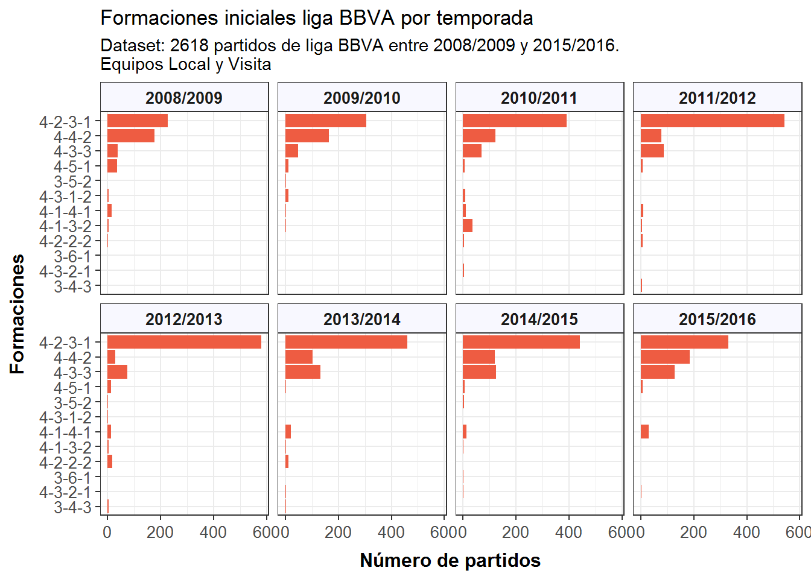
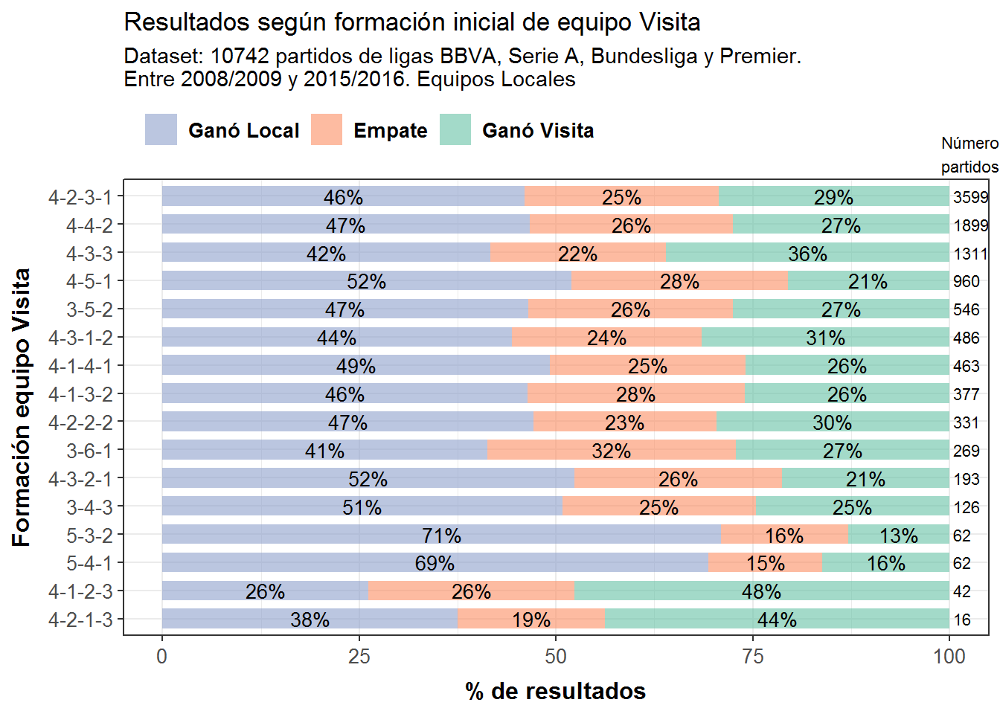

Para el debut de DATO FUTBOL le daremos un vistazo a la rica base de datos de partidos de las principales ligas europeas, disponible abiertamente en el sitio de la comunidad de ciencia de datos Kaggle.
Decidimos seleccionar solo las ligas y temporadas con los datos más completos, por lo que se tomaron en cuenta 10755 partidos equivalentes a 8 temporadas (2008/2009 a 2015/2016) de Premier League, La Liga BBVA, Serie A y Bundesliga.
En los próximos post podremos ver análisis y detalles de otras variables, pero en este post nos centraremos en las formaciones iniciales de cada equipo Local y Visita. Esta información en la base de datos original está codificada con coordenadas X e Y para cada uno de los 22 jugadores que entran a la cancha, por lo que esta se tuvo que procesar para determinar las formaciones según la manera típica que estas se presentan (ej: 4-4-2, 4-3-3, etc.). Durante dicho proceso también se separó arbitrariamente el medio campo para distinguir entre volantes defensivos y ofensivos, dando pie a formaciones del tipo 4-2-3-1, 4-3-2-1, etc.
A continuación los distintos análisis realizados (frecuencia total, por liga, por temporada y según resultados), los que corresponden exclusivamente a una estadística descriptiva (no inferencial). Considerar que en todos los casos se grafican las formaciones más frecuentes, descartando las que no tienen mayor presencia. A esto se deben las diferencias de cantidad de partidos entre gráficos.
1) Total de formaciones para equipos Local y Visita (todas las ligas)
Se pueden apreciar claramente las formaciones iniciales más utilizadas. Las 3 primeras son 4-2-3-1, 4-4-2 y 4-3-3.
Se evidencia la supremacía de la línea de 4 por sobre la de 3. La mejor exponente de la “línea de 3” (3-5-2) queda relegada al 5to lugar.
No hay diferencias notorias entre las formaciones usadas por equipos locales y equipos visitas.
2) Total de formaciones por ligas
Las ligas BBVA y Premier tienden a concentrar sus formaciones iniciales principalmente en solo 3 o 4 tipos: 4-2-3-1, 4-4-2 y 4-3-3 en ambas ligas y aparece 4-5-1 en la Premier con una cantidad considerable (es la liga en la que más se usa este esquema). En BBVA destaca ampliamente 4-2-3-1 por sobre todas las otras formaciones.
Por otro lado, Bundesliga y Serie A tienen un comportamieto más homogéneo, repartiéndose el uso de formaciones en distintos esquemas. Además de los esquemas típicos, en Bundesliga aparecen algunos esquemas como 4-1-4-1, 4-1-3-2 y 4-2-2-2, mientras que en Serie A aparecen esquemas con línea de 3: 3-5-2 y 3-6-1.
4-2-3-1 gana en BBVA y Bundesliga, 4-4-2 en Premier y 4-3-3 en Serie A.
3) Total de formaciones por temporada
Premier League BBVA  Serie A Bundesliga 
En cada gráfico podemos ver para cada la liga la respectiva evolución de las formaciones utilizadas a medida que pasan las temporadas (entre 2008/2009 y 2015/2016).
Para la Premier se observa que en las primeras 4 temporadas se usaba principalmente 4-4-2 y 4-5-1, pero luego se dio paso a 4-2-3-1.
En BBVA no se advierten grandes variaciones, manteniéndose el 4-2-3-1 siempre como la formación inicial más frecuente.
Para la Serie A se tienen varias modificaciones en el tiempo, presentando como formaciones más utilizadas el 4-3-1-2 (2008/2010), el 4-4-2 (2010/2012), el 3-5-2 (2012/2013) y finalmente el 4-3-3 (2013/2016). En todas las temporadas se presenta un número importante de casos 3-5-2 y particularmente en las últimas 4 seasons aparece también el 3-6-1. Se aprecia una alta variedad de formaciones no solo al comparar temporadas sino que también dentro de una misma temporada.
En Bundesliga se observa cómo el 4-2-3-1 ha estado presente en todo el periodo estudiado y con alta participación. También cómo los esquemas del tipo 4-1-3-2 y 4-2-2-2 fueron desapareciendo y además cómo apareció en los últimos años el 4-1-4-1.
Los resultados de este análisis conversan de buena forma con los gráficos de los primeros análisis.
4) Distribución de resultados por formación
Equipos Locales Equipos Visitas 
Ninguna de las formaciones iniciales de un equipo local está asociada a un resultado ganador en más del 50% de los partidos, pero la gran mayoría se relaciona con un equipo local que gana más del 40% de los casos, excepto las formaciones más defensivas: 4-5-1 (39%), 5-4-1 (35%) y 5-3-2 (30%), por lo que se observa la tendencia de que “un equipo local con formación defensiva tiene menos probabilidades de ganar”.
Por su parte, para los equipos visita se observan dos tendencias: A) cuando la visita usa una formación defensiva, principalmente 5-3-2 y 5-4-1, el equipo local gana en el 71% y 69% de los casos respectivamente; y B) Las mejores formaciones de visita para obtener una victoria corresponden a formaciones ofensivas o con 3 delanteros: 4-1-2-3 (48%) y 4-2-1-3 (44%).
Para ambas observaciones vale decir que en algunos de los resultados no se tienen muchos casos de análisis puesto que en pocos partidos se usan estas formaciones, por lo que las tendencias observadas deberían testearse como hipótesis estadísticas más formales. Un caso con más partidos para A) es el de formación de visita defensiva igual a 4-5-1 donde el equipo local gana en el 52% de los partidos, mientras que para B) el caso de formación visita 4-3-3 con resultado donde gana vista en un 36% de los partidos.
Actualización 16-05-2017: Ya están disponible la base de datos y los códigos utilizados en este post.